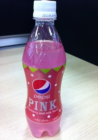
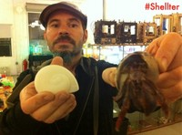
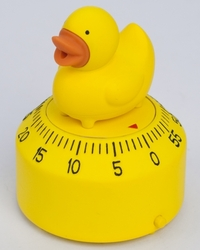
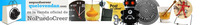
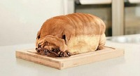
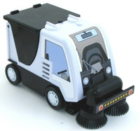

Pepsi rosa sabor fresa y leche
Sun, 27 Nov 2011 09:22:07 +0000
De todos es conocido que los japoneses son un poco… cómo decirlo, raritos. Quizá por ello a Pepsi todos los años le da por sacar algún sabor raro, no sé si para reírse un poco del frikismo japo o para Continue reading.
De todos es conocido que los japoneses son un poco… cómo decirlo, raritos. Quizá por ello a Pepsi todos los años le da por sacar algún sabor raro, no sé si para reírse un poco del frikismo japo o para ver si da el pelotazo bueno y se hace un con trozo de mercado curioso con una bebida que no tiene competencia.
Este año le ha tocado a la Pepsi sabor fresa y leche. Por supuesto, el color rosa, claro, que sabe a fresa, aunque el sabor principal es… ¡zumo de uva! Vamos, que Pepsi han sacado un mosto con burbujas que sabe a fresa y no a mosto (ni a lo que en España entenderíamos por un Pepsi).
No sé, estoy pensando que podrían hacer el Japón el concurso ese de Lays de sacar sabores nuevos y los que triunfen se sacan un buen dinerillo extra. Mi aportación: Pepsi sabor lasaña de boloñesa. Ahí queda eso…
Visto en Kirai.net
¿Algo que comentar? [6] Tags: bebidas, fresas, Japoneses, pepsi
Conchas artificiales para paguroideos
Sat, 26 Nov 2011 11:51:19 +0000
Los paguroideos son una subespecie de cangrejos a la que pertenecen los cangrejos ermitaños. Están en peligro de extinción debido a la ausencia de conchas de moluscos en las que refugiarse. Por eso, Makerbot ha comenzado el Proyecto Shellter, en Continue reading.
Los paguroideos son una subespecie de cangrejos a la que pertenecen los cangrejos ermitaños. Están en peligro de extinción debido a la ausencia de conchas de moluscos en las que refugiarse. Por eso, Makerbot ha comenzado el Proyecto Shellter, en el que fabricarán con impresoras 3D conchas artificiales para evitar la desaparición de estos cangrejos.

Los paguroideos necesitan las conchas de moluscos muertos para vivir debido a su blando exoesqueleto, que los hace presa fácil. Esta reutilización de partes de otros animales muertos se llama tanatocresis y es una costumbre muy rara en el mundo animal que requiere, a medida que crecen, cambiar la concha por otra más grande y, como la compra de una vivienda más grande, cada día es más difícil por la muerte prematuda de los gasterópodos.
Miles Lightwood, artista y diseñador de Makerbot, está creando conchas con las impresoras 3D de la compañía para facilitar a los paguroideos la búsqueda de objetos con los que protegerse, ya que se está empezando a dar el caso de cangrejos que usan botellas y otros desechos como protección.
En el ambicioso proyecto se están llevando a cabo los necesarios estudios sobre biodegradabilidad, preferencias de los cangrejos y toxicidad. Por eso, aceptan toda la ayuda que otros diseñadores pudieran ofrecer en la búsqueda de diseños más interesantes para los cangrejos y que se puedan crear con impresoras 3D.
Visto en Geekosystem.
¿Algo que comentar? [1] Tags: 3D, cangrejos, ecologismo, impresoras

QueLoVendan La tienda de regalos y gadgets divertidos - Cupón dto. 5% -> SOY_FAN_DE_NPC
Patito contador
Fri, 25 Nov 2011 11:27:47 +0000
No es un patito contable ni ciclista. Este bonito patito amarillo es un temporizador que parpa al llegar a cero. El clásico pato de goma para el baño vuelve a cambiar de función en casa y su acabado de goma Continue reading.
No es un patito contable ni ciclista. Este bonito patito amarillo es un temporizador que parpa al llegar a cero.

El clásico pato de goma para el baño vuelve a cambiar de función en casa y su acabado de goma amarilla le devuelve su aspecto de pato de baño clásico. Ahora se sienta sobre un temporizador que le da uso en la cocina.
Además, el sonido de pato al llegar al final es genial.
Visto en Amazon.
¿Algo que comentar? [1] Tags: contadores, pato, relojes

QueLoVendan La tienda de gadgets y regalos originales - Cupón dto. 5% -> SOY_FAN_DE_NPC
Perro de molde, con corteza
Thu, 24 Nov 2011 23:19:45 +0000
La idea es original y… apetitosa. Sería perfecta si el perrito sonriera un poco. Visto en Bitsandpieces ¿Algo que comentar? [6] Tags: pan, perros

La idea es original y… apetitosa. Sería perfecta si el perrito sonriera un poco.
Visto en Bitsandpieces
¿Algo que comentar? [6] Tags: pan, perros
Aspiradora barredora de mesa
Thu, 24 Nov 2011 11:07:08 +0000
Esta miniatura de barredora de calles funciona como barredora de mesas y es capaz de limpiar las migas de la mesa o el polvo del escritorio. La máquina barredora funciona con 3 pilas y circula sobre las mesas con dos Continue reading.
Esta miniatura de barredora de calles funciona como barredora de mesas y es capaz de limpiar las migas de la mesa o el polvo del escritorio.

La máquina barredora funciona con 3 pilas y circula sobre las mesas con dos cepillos circulares de goma que recogen toda la suciedad y la succionan. Divertido y práctico.
Gracias a Loft98
¿Algo que comentar? [3] Tags: barredora, coches, miniaturas
QueLoVendan La tienda de gadgets y regalos originales - Cupón dto. 5% -> SOY_FAN_DE_NPC